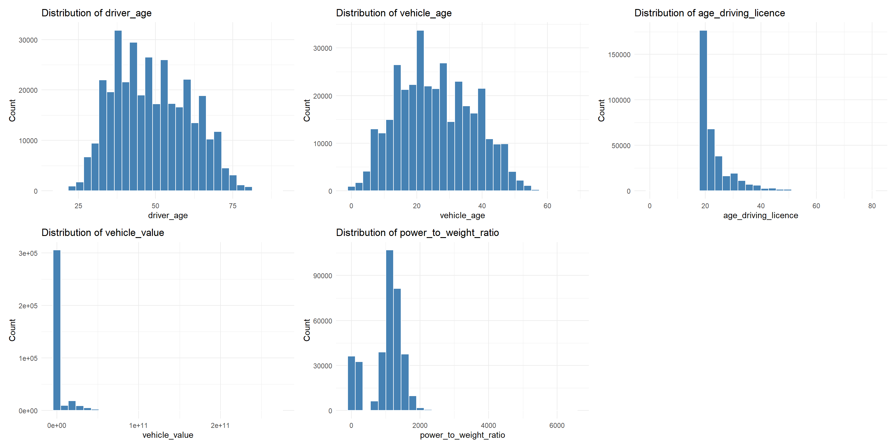

pacman::p_load(tidyverse,
psych,
dplyr,
patchwork
) Technical Report
Data wrangling
Importing dataset
The dataset contains anonymised microdata on automobile insurance policies and covers the main operations of the non-life portfolio from January 2022 to December 2024. The database shows 354,140 records and 47 variables, where each row corresponds to a policy transaction and each column to a specific attribute of that transaction.
This dataset uses semicolon delimiters, we use read_csv2() that is a base R shortcut that assumes semicolon delimiters by default.
motoinsu <- read_csv2("data/Motor_insurance_portfolio.csv")Out of a total of 47 attributes in the motoinsu tibble data frame, 29 of them are numerical data type (dbl - double) and 28 features are categorical data type (char - character).
describe(motoinsu %>%
select(where(is.numeric)) # Only show numerical columns
) %>%
select(vars, min, max, mean, skew) # Only get desired columns vars min max mean skew
insured_id 1 1 1.856780e+05 7.604450e+04 0.47
year 2 2022 2.024000e+03 2.023290e+03 -0.53
driver_age 3 18 9.000000e+01 4.901000e+01 0.23
vehicle_age 4 0 6.800000e+01 2.592000e+01 0.19
age_driving_licence 5 0 8.000000e+01 2.299000e+01 2.14
vehicle_value 6 8694 2.715851e+11 3.460536e+09 3.90
seats 7 2 9.000000e+00 5.080000e+00 0.90
power_to_weight_ratio 8 0 6.481000e+03 1.007860e+03 -0.75
total_premium 9 0 9.999870e+14 3.257749e+14 0.92
total_claims 10 0 1.800000e+01 2.200000e-01 4.71
liability_claims 11 0 8.000000e+00 1.100000e-01 4.29
liability_property_claims 12 0 8.000000e+00 9.000000e-02 3.86
liability_injury_claims 13 0 3.000000e+00 1.000000e-02 8.90
property_claims 14 0 1.500000e+01 6.000000e-02 9.38
theft_claims 15 0 2.000000e+00 1.000000e-02 14.43
fire_claims 16 0 1.000000e+00 0.000000e+00 59.48
glass_claims 17 0 3.000000e+00 3.000000e-02 5.89
legal_protection_claims 18 0 2.000000e+00 1.000000e-02 10.47
occupants_claims 19 0 1.000000e+00 0.000000e+00 90.73
total_incurred 20 0 9.993500e+14 2.480425e+11 57.88
liability_incurred 21 0 9.993500e+14 1.862203e+11 66.06
liability_property_incurred 22 0 9.993500e+14 2.279669e+11 59.74
liability_injury_incurred 23 0 1.150000e+14 3.250855e+08 595.09
property_incurred 24 0 9.776150e+14 4.087487e+10 141.39
theft_incurred 25 0 2.706988e+08 2.532901e+04 124.26
fire_incurred 26 0 2.829000e+03 2.000000e-02 390.87
glass_incurred 27 0 1.150000e+14 3.247953e+08 595.09
legal_protection_incurred 28 0 9.932550e+14 8.582059e+10 99.51
occupants_incurred 29 0 6.900000e+04 8.400000e-01 283.17library(readxl)
library(tidyr)
library(dplyr)
library(kableExtra)
var_desc <- read_excel("data/Descriptive_of_variables.xlsx") %>%
fill(everything(), .direction = "down") %>%
group_by(Variables, Group) %>%
summarise(Description = paste(Description, collapse = " "), .groups = "drop")
var_desc %>%
kable() %>%
kable_styling(bootstrap_options = c("striped", "hover", "condensed"),
full_width = FALSE)| Variables | Group | Description |
|---|---|---|
| age_driving_licence | Driver and vehicle characteristics | Year in which the insured obtained the driving licence. Note: this variable records the calendar year of licence issuance and does not measure the length of time the licence has been held. |
| bonus_score | Policy and insured characteristics | Indicator of the policyholder’s past claims experience: - G: Positive reflects a favourable claims history - N: indicates a neutral profile - B: had a negative denotes a poor claims history. |
| business_type | Policy and insured characteristics | Classification of the policy according to its business origin. - NB: new_business - P: portfolio |
| circulation_area | Driver and vehicle characteristics | Indicates the predominant circulation environment of the vehicle: - U: urban - R: rural |
| driver_age | Driver and vehicle characteristics | Age of the main driver associated with the policy, measured in years. |
| fire_claims | Exposure, claims and incurred | Count of fire-related claims. |
| fire_incurred | Exposure, claims and incurred | Total incurred cost for fire claims. |
| fire_premium | Premiums | Premium for fire coverage. |
| fuel_type | Driver and vehicle characteristics | Indicates the vehicle’s fuel type. In this dataset, only two categories are kept: - D: diesel - G: gasoline |
| glass_claims | Exposure, claims and incurred | Number of glass-related claims. |
| glass_incurred | Exposure, claims and incurred | Total incurred cost for glass claims. |
| glass_premium | Premiums | Premium for glass coverage. |
| insured_id | Policy and insured characteristics | Unique identifier assigned to each policy number. It assigns a sequential ID based on the first appearance of each policy number; repeated policy numbers receive the same ID. |
| legal_protection_claims | Exposure, claims and incurred | Number of legal protection claims. |
| legal_protection_incurred | Exposure, claims and incurred | Total incurred cost for legal protection claims. |
| legal_protection_premium | Premiums | Premium for legal protection coverage. |
| liability_claims | Exposure, claims and incurred | Total number of liability claims reported under the policy. |
| liability_exposure | Exposure, claims and incurred | Amount of exposure associated with liability coverage. |
| liability_incurred | Exposure, claims and incurred | Total incurred cost (paid + reserved) for all liability claims. |
| liability_injury_claims | Exposure, claims and incurred | Number of liability claims involving bodily injury. |
| liability_injury_incurred | Exposure, claims and incurred | Total incurred cost for liability claims involving bodily injury. |
| liability_premium | Premiums | Premium charged for third-party liability coverage. |
| liability_property_claims | Exposure, claims and incurred | Number of liability claims related to material or property damage. |
| liability_property_incurred | Exposure, claims and incurred | Total incurred cost for liability claims involving material or property damage. |
| municipality_type | Driver and vehicle characteristics | Geographic classification of the policyholder’s municipality: - I: inland - C: coastal - IS: islands |
| occupants_claims | Exposure, claims and incurred | Number of claims under this coverage. |
| occupants_incurred | Exposure, claims and incurred | Total incurred cost under this coverage. |
| occupants_premium | Premiums | Premium for personal-injury coverage of vehicle occupants. |
| payment_frequency | Policy and insured characteristics | Indicates the policy’s billing frequency: - A: annual - S: semiannual - Q: quarterly |
| policy_status | Policy and insured characteristics | Indicates whether the policy was active (A) or cancelled (C) at the time of analysis. |
| policy_type | Policy and insured characteristics | Categorical variable describing the main coverage structure of the motor insurance policy. The original detailed combinations have been grouped into broader, actuarially meaningful categories. - TP: Basic third-party liability coverage only. - TPG: Third-party liability with glass coverage. - CC: Third-party liability combined with two or more additional coverages, such as theft, fire, total loss or glass. - COMP_E: comprehensive with excess. - COMP_N: comprehensive without excess |
| power_to_weight_ratio | Driver and vehicle characteristics | Approximate weight-to-power ratio of the vehicle (kg per horsepower), used as a proxy for performance characteristics. |
| property_claims | Exposure, claims and incurred | Count of property damage claims. |
| property_damage_premium | Premiums | Premium corresponding to property damage coverage. |
| property_incurred | Exposure, claims and incurred | Total incurred cost for property damage claims. |
| seats | Driver and vehicle characteristics | Number of seats available in the insured vehicle. |
| theft_claims | Exposure, claims and incurred | Number of theft-related claims. |
| theft_incurred | Exposure, claims and incurred | Total incurred cost for theft claims. |
| theft_premium | Premiums | Premium associated with theft coverage. |
| total_claims | Exposure, claims and incurred | Indicates the total number of claims reported for the policy during the exposure period. Typical values range from 0 (no claims) to several claims per contract. |
| total_exposure | Exposure, claims and incurred | Represents the effective time-on-risk for each policy, expressed in policy years. Values range from 0 to 1 for partial-year exposure, and may exceed 1 if the contract covers more than one year. |
| total_incurred | Exposure, claims and incurred | Represents the total incurred cost of claims for the policy, including paid amounts and outstanding reserves. Values are typically zero for policies without losses and positive when claims exist. |
| total_premium | Premiums | Total premium of the policy, calculated as the sum of all individual coverage premiums. |
| vehicle_age | Driver and vehicle characteristics | Age of the insured vehicle, also measured in years. |
| vehicle_brand | Driver and vehicle characteristics | Brand of the insured vehicle as reported in the policy data. |
| vehicle_value | Driver and vehicle characteristics | Declared insured value of the vehicle. Some entries are missing |
| year | Policy and insured characteristics | Calendar year |
glimpse(motoinsu)Rows: 354,140
Columns: 47
$ insured_id <dbl> 1, 2, 2, 2, 3, 3, 3, 4, 4, 4, 5, 5, 5, 6, …
$ year <dbl> 2022, 2022, 2023, 2024, 2022, 2023, 2024, …
$ policy_type <chr> "COMP_E", "COMP_E", "COMP_E", "COMP_E", "C…
$ policy_status <chr> "C", "A", "A", "A", "A", "A", "A", "A", "A…
$ business_type <chr> "NB", "P", "P", "P", "NB", "P", "P", "NB",…
$ payment_frequency <chr> "A", "A", "A", "A", "S", "S", "S", "A", "A…
$ bonus_score <chr> "G", "G", "G", "G", "G", "G", "G", "G", "G…
$ driver_age <dbl> 48, 43, 44, 45, 45, 46, 47, 32, 33, 34, 39…
$ vehicle_age <dbl> 22, 24, 25, 26, 26, 27, 28, 12, 13, 14, 20…
$ age_driving_licence <dbl> 26, 19, 19, 18, 19, 19, 19, 19, 19, 19, 19…
$ fuel_type <chr> "G", "D", "D", "D", "D", "D", "D", "D", "D…
$ vehicle_value <dbl> 1495114425, 650651232, 650651232, 65065123…
$ seats <dbl> 4, 8, 8, 8, 7, 7, 7, 5, 5, 5, 5, 5, 5, 5, …
$ power_to_weight_ratio <dbl> 392, 1015, 1015, 1015, 919, 919, 919, 117,…
$ vehicle_brand <chr> "PORSCHE", "MERCEDES", "MERCEDES", "MERCED…
$ municipality_type <chr> "I", "I", "I", "I", "I", "I", "I", "I", "I…
$ circulation_area <chr> "U", "U", "U", "U", "R", "R", "R", "R", "R…
$ total_premium <dbl> 2.795576e+14, 5.466234e+14, 5.487526e+14, …
$ liability_premium <chr> "30.6023237556165", "114.333356153425", "1…
$ property_damage_premium <chr> "121.912689768658", "303.105967487671", "3…
$ theft_premium <chr> "112.361488722247", "80.784823960274", "83…
$ fire_premium <chr> "3.83244054509589", "7.82686089041096", "6…
$ glass_premium <chr> "8.30578787063014", "30.091750730137", "32…
$ legal_protection_premium <chr> "2.04362162038356", "7.81274746849314", "7…
$ occupants_premium <chr> "0.499205281315068", "2.66790841643835", "…
$ total_claims <dbl> 0, 0, 1, 2, 0, 0, 0, 0, 0, 0, 0, 0, 0, 5, …
$ liability_claims <dbl> 0, 0, 1, 1, 0, 0, 0, 0, 0, 0, 0, 0, 0, 0, …
$ liability_property_claims <dbl> 0, 0, 1, 1, 0, 0, 0, 0, 0, 0, 0, 0, 0, 0, …
$ liability_injury_claims <dbl> 0, 0, 0, 0, 0, 0, 0, 0, 0, 0, 0, 0, 0, 0, …
$ property_claims <dbl> 0, 0, 0, 1, 0, 0, 0, 0, 0, 0, 0, 0, 0, 5, …
$ theft_claims <dbl> 0, 0, 0, 0, 0, 0, 0, 0, 0, 0, 0, 0, 0, 0, …
$ fire_claims <dbl> 0, 0, 0, 0, 0, 0, 0, 0, 0, 0, 0, 0, 0, 0, …
$ glass_claims <dbl> 0, 0, 0, 0, 0, 0, 0, 0, 0, 0, 0, 0, 0, 0, …
$ legal_protection_claims <dbl> 0, 0, 0, 0, 0, 0, 0, 0, 0, 0, 0, 0, 0, 0, …
$ occupants_claims <dbl> 0, 0, 0, 0, 0, 0, 0, 0, 0, 0, 0, 0, 0, 0, …
$ total_incurred <dbl> 0, 0, 233013, 25863615, 0, 0, 0, 0, 0, 0, …
$ liability_incurred <dbl> 0, 0, 233013, 1035, 0, 0, 0, 0, 0, 0, 0, 0…
$ liability_property_incurred <dbl> 0, 0, 233013, 1035, 0, 0, 0, 0, 0, 0, 0, 0…
$ liability_injury_incurred <dbl> 0, 0, 0, 0, 0, 0, 0, 0, 0, 0, 0, 0, 0, 0, …
$ property_incurred <dbl> 0, 0, 0, 15513615, 0, 0, 0, 0, 0, 0, 0, 0,…
$ theft_incurred <dbl> 0, 0, 0, 0, 0, 0, 0, 0, 0, 0, 0, 0, 0, 0, …
$ fire_incurred <dbl> 0, 0, 0, 0, 0, 0, 0, 0, 0, 0, 0, 0, 0, 0, …
$ glass_incurred <dbl> 0, 0, 0, 0, 0, 0, 0, 0, 0, 0, 0, 0, 0, 0, …
$ legal_protection_incurred <dbl> 0, 0, 0, 0, 0, 0, 0, 0, 0, 0, 0, 0, 0, 0, …
$ occupants_incurred <dbl> 0, 0, 0, 0, 0, 0, 0, 0, 0, 0, 0, 0, 0, 0, …
$ total_exposure <chr> "0.0986301369863014", "1", "1", "1", "1", …
$ liability_exposure <chr> "0.0986301369863014", "1", "1", "1", "1", …Conversing datatype
We realize that we need to change data type of some variables as follows.
motoinsu <- motoinsu %>%
mutate(
# from dbl to chr (identifier)
insured_id = as.character(insured_id),
# from dbl to fac (categorical)
across(c(year, policy_type, policy_status, business_type,
payment_frequency, bonus_score, fuel_type, seats,
vehicle_brand, municipality_type, circulation_area),
as.factor),
# from char to dbl
across(c(liability_premium, property_damage_premium,
theft_premium, fire_premium, glass_premium,
legal_protection_premium, occupants_premium,
total_exposure, liability_exposure),
as.double)
)
glimpse(motoinsu)Rows: 354,140
Columns: 47
$ insured_id <chr> "1", "2", "2", "2", "3", "3", "3", "4", "4…
$ year <fct> 2022, 2022, 2023, 2024, 2022, 2023, 2024, …
$ policy_type <fct> COMP_E, COMP_E, COMP_E, COMP_E, COMP_E, CO…
$ policy_status <fct> C, A, A, A, A, A, A, A, A, A, A, A, A, A, …
$ business_type <fct> NB, P, P, P, NB, P, P, NB, P, P, NB, P, P,…
$ payment_frequency <fct> A, A, A, A, S, S, S, A, A, A, A, A, A, A, …
$ bonus_score <fct> G, G, G, G, G, G, G, G, G, G, G, G, G, G, …
$ driver_age <dbl> 48, 43, 44, 45, 45, 46, 47, 32, 33, 34, 39…
$ vehicle_age <dbl> 22, 24, 25, 26, 26, 27, 28, 12, 13, 14, 20…
$ age_driving_licence <dbl> 26, 19, 19, 18, 19, 19, 19, 19, 19, 19, 19…
$ fuel_type <fct> G, D, D, D, D, D, D, D, D, D, D, D, D, D, …
$ vehicle_value <dbl> 1495114425, 650651232, 650651232, 65065123…
$ seats <fct> 4, 8, 8, 8, 7, 7, 7, 5, 5, 5, 5, 5, 5, 5, …
$ power_to_weight_ratio <dbl> 392, 1015, 1015, 1015, 919, 919, 919, 117,…
$ vehicle_brand <fct> PORSCHE, MERCEDES, MERCEDES, MERCEDES, KIA…
$ municipality_type <fct> I, I, I, I, I, I, I, I, I, I, C, I, I, C, …
$ circulation_area <fct> U, U, U, U, R, R, R, R, R, R, R, U, U, R, …
$ total_premium <dbl> 2.795576e+14, 5.466234e+14, 5.487526e+14, …
$ liability_premium <dbl> 30.60232, 114.33336, 110.66689, 122.09253,…
$ property_damage_premium <dbl> 121.9127, 303.1060, 304.9560, 305.2251, 35…
$ theft_premium <dbl> 112.361489, 80.784824, 83.521384, 107.8868…
$ fire_premium <dbl> 3.832441, 7.826861, 6.151465, 5.842892, 7.…
$ glass_premium <dbl> 8.305788, 30.091751, 32.861626, 31.101584,…
$ legal_protection_premium <dbl> 2.043622, 7.812747, 7.655637, 10.084173, 6…
$ occupants_premium <dbl> 0.4992053, 2.6679084, 2.9395659, 2.3992827…
$ total_claims <dbl> 0, 0, 1, 2, 0, 0, 0, 0, 0, 0, 0, 0, 0, 5, …
$ liability_claims <dbl> 0, 0, 1, 1, 0, 0, 0, 0, 0, 0, 0, 0, 0, 0, …
$ liability_property_claims <dbl> 0, 0, 1, 1, 0, 0, 0, 0, 0, 0, 0, 0, 0, 0, …
$ liability_injury_claims <dbl> 0, 0, 0, 0, 0, 0, 0, 0, 0, 0, 0, 0, 0, 0, …
$ property_claims <dbl> 0, 0, 0, 1, 0, 0, 0, 0, 0, 0, 0, 0, 0, 5, …
$ theft_claims <dbl> 0, 0, 0, 0, 0, 0, 0, 0, 0, 0, 0, 0, 0, 0, …
$ fire_claims <dbl> 0, 0, 0, 0, 0, 0, 0, 0, 0, 0, 0, 0, 0, 0, …
$ glass_claims <dbl> 0, 0, 0, 0, 0, 0, 0, 0, 0, 0, 0, 0, 0, 0, …
$ legal_protection_claims <dbl> 0, 0, 0, 0, 0, 0, 0, 0, 0, 0, 0, 0, 0, 0, …
$ occupants_claims <dbl> 0, 0, 0, 0, 0, 0, 0, 0, 0, 0, 0, 0, 0, 0, …
$ total_incurred <dbl> 0, 0, 233013, 25863615, 0, 0, 0, 0, 0, 0, …
$ liability_incurred <dbl> 0, 0, 233013, 1035, 0, 0, 0, 0, 0, 0, 0, 0…
$ liability_property_incurred <dbl> 0, 0, 233013, 1035, 0, 0, 0, 0, 0, 0, 0, 0…
$ liability_injury_incurred <dbl> 0, 0, 0, 0, 0, 0, 0, 0, 0, 0, 0, 0, 0, 0, …
$ property_incurred <dbl> 0, 0, 0, 15513615, 0, 0, 0, 0, 0, 0, 0, 0,…
$ theft_incurred <dbl> 0, 0, 0, 0, 0, 0, 0, 0, 0, 0, 0, 0, 0, 0, …
$ fire_incurred <dbl> 0, 0, 0, 0, 0, 0, 0, 0, 0, 0, 0, 0, 0, 0, …
$ glass_incurred <dbl> 0, 0, 0, 0, 0, 0, 0, 0, 0, 0, 0, 0, 0, 0, …
$ legal_protection_incurred <dbl> 0, 0, 0, 0, 0, 0, 0, 0, 0, 0, 0, 0, 0, 0, …
$ occupants_incurred <dbl> 0, 0, 0, 0, 0, 0, 0, 0, 0, 0, 0, 0, 0, 0, …
$ total_exposure <dbl> 0.09863014, 1.00000000, 1.00000000, 1.0000…
$ liability_exposure <dbl> 0.09863014, 1.00000000, 1.00000000, 1.0000…
Tip
- dbl stands for: double, numbers with decimals.
- fct: factor, text with fixed, known categories. Factor uses less memory, which matters in such large database.
- char: character, plain text without predefined categories.
After changing data type, we have 1 identifier, 11 categorical variables and 35 numerical variables.
Handling missing values
There are six features having missing values. Although all of these rates are small, under 1%, we treat them differently.
colSums(is.na(motoinsu)) %>%
.[. > 0] vehicle_age age_driving_licence fuel_type vehicle_value
2 2 1287 513
fire_incurred occupants_incurred
94 25 colMeans(is.na(motoinsu)) %>% # Caculate missing rate in each column
round(5) %>%
.[. > 0] # Filter ratio > 0 vehicle_age age_driving_licence fuel_type vehicle_value
0.00001 0.00001 0.00363 0.00145
fire_incurred occupants_incurred
0.00027 0.00007 vehicle_age,age_driving_licenceonly lack two values, we drop these missing rows.fire_incurred,occupants_incurredhaving missing values likely means no claim, in insurance context. Therefore we can change to zero.fuel_type,vehicle_valuehave more missing values, which make I consider between using mode/medium or remove missing rows. Because they are seem important features, it is risky to impute data. This issue should be reported to the relevant stakeholders.
motoinsu <- motoinsu %>%
drop_na(vehicle_age, age_driving_licence, fuel_type, vehicle_value ) %>%
mutate(
fire_incurred = replace_na(fire_incurred, 0),
occupants_incurred = replace_na(occupants_incurred, 0)
)
# Check after modification
colSums(is.na(motoinsu)) %>%
.[. > 0]named numeric(0)Visual Analysis
Univariate Analysis
Categorical variables
Among 11 categorical columns, vehicle_brand has too many distinct values. Therefore we will visualize its distribution and impute it later. Following is the distributions of 10 categorical features.
# gom_bar(): counts rows automatically
# fct_infreq: reorder factor levels based on the frequency of values
cat_vars <- c("year", "policy_type", "policy_status", "business_type",
"payment_frequency", "bonus_score",
"fuel_type", "seats",
"municipality_type", "circulation_area")
plots <- lapply(cat_vars, function(col) {
ggplot(motoinsu, aes(x = fct_infreq(!!sym(col)))) +
geom_bar(aes(y = after_stat(count/sum(count) * 100)), fill = "steelblue") +
geom_text(aes(y = after_stat(count/sum(count) * 100),
label = paste0(round(after_stat(count/sum(count) * 100), 1), "%")),
stat = "count", vjust = -0.5, size = 3) +
labs(title = paste("Distribution of", col), x = col, y = "Percentage (%)") +
theme_minimal() +
theme(axis.text.x = element_text(angle = 45, hjust = 1))
})
wrap_plots(plots, ncol = 3)
NoteInsights:
Policy & Business Characteristics
- Year: Data is unbalanced - 2024 (47.4%) has the most records, likely because policies accumulate over time. Dataset covers 3 years of a growing portfolio.
- Policy type: CC dominates (58%), meaning most customers choose combined third-party + additional coverage. Pure TP is rare (1.6%) - customers prefer more protection.
- Policy status: 89.2% active (A) vs 10.8% cancelled (C) - relatively low cancellation rate, portfolio is stable.
- Business type: 69.3% new business (NB) vs 30.7% portfolio (P), which means the insurer is heavily acquiring new customers rather than renewing existing ones. This is a risk signal, new customers have unknown claims history.
- Payment frequency: 81.3% pay annually (A) - most customers prefer single payment, simplifying cash flow for the insurer.
- Bonus score: 96.5% have score G (good/favorable claims history) - the portfolio is dominated by low-risk customers historically.
Vehicle Characteristics
- Fuel type: 64.2% diesel (D) vs 35.8% gasoline (G) - diesel vehicles dominate, which may have different risk profiles.
- Seats: 84.9% have 5 seats - standard passenger cars dominate, very homogeneous portfolio.
Geographic
- Municipality type: 64.6% type I (Inland) where typically have higher accident/theft risk than coastal and island areas.
- Circulation area: Nearly split between U (53.8%) and R (46.2%) - urban vs rural almost balanced, suggesting national coverage.
Vehicle brand distribution show high fragmentation with top brand ~10%, many brands with <1%. We will combine all brands excluding RENAULT, CITROEN, PEUGEOT, VOLKSWAGEN, FORD, SEAT, and OPEL.
# gom_bar(): counts rows automatically
# fct_infreq: reorder factor levels based on the frequency of values
ggplot(motoinsu, aes(x = fct_infreq(vehicle_brand))) +
geom_bar(aes(y = after_stat(count/sum(count) * 100)), fill = "steelblue") +
geom_text(aes(y = after_stat(count/sum(count) * 100),
label = paste0(round(after_stat(count/sum(count) * 100), 1), "%")),
stat = "count", vjust = -0.5, size = 3) +
labs(title = "Distribution of Vehicle Brand", x = "Vehicle Brand", y = "Percentage (%)") +
theme_minimal() +
theme(axis.text.x = element_text(angle = 45, hjust = 1))
Then plot them by distribution.
# Bin
top_brands <- c("RENAULT", "CITROEN", "PEUGEOT", "VOLKSWAGEN", "FORD", "SEAT", "OPEL")
motoinsu <- motoinsu %>%
mutate(vehicle_brand_grouped = fct_other(vehicle_brand,
keep = top_brands,
other_level = "Others"))
# Draw chart
ggplot(motoinsu, aes(x = fct_infreq(vehicle_brand_grouped))) +
geom_bar(aes(y = after_stat(count/sum(count) * 100)), fill = "steelblue") +
geom_text(aes(y = after_stat(count/sum(count) * 100),
label = paste0(round(after_stat(count/sum(count) * 100), 1), "%")),
stat = "count", vjust = -0.5, size = 3) +
labs(title = "Distribution of Vehicle Brand", x = "Vehicle Brand", y = "Percentage (%)") +
theme_minimal() +
theme(axis.text.x = element_text(angle = 45, hjust = 1))
NoteInsights:
- The near-equal spread among top brands means risk is not concentrated in any single brand’s characteristics.
- Among top 7, French brands (RENAULT, CITROEN, PEUGEOT) collectively represent ~27%, reflecting Spain’s strong preference for French automobiles.
- SEAT’s presence (~7.9%) is notable as a Spanish domestic brand, expected in a Spanish portfolio.
- The large “Others” group (40.6%) warrants further investigation - it contains luxury brands (BMW, MERCEDES, AUDI) and niche brands that may carry higher vehicle values and different risk profiles.
Numerical variables
Driver & vehicle Distributions
num_vars <- c("driver_age", "vehicle_age", "age_driving_licence",
"vehicle_value", "power_to_weight_ratio")
plots <- lapply(num_vars, function(col) {
ggplot(motoinsu, aes(x = as.numeric(!!sym(col)))) + # as.numeric() inside aes() forces any discrete/factor columns to be treated as continuous
geom_histogram(fill = "steelblue", color = "white", bins = 30) +
labs(title = paste("Distribution of", col), x = col, y = "Count") +
theme_minimal()
})
wrap_plots(plots, ncol = 3)
NoteInsights
Driver & Licence Characteristics
- driver_age: roughly bell-shaped, peaking around 35–50 years. Young drivers (<25) and elderly (>70) are rare, suggesting the portfolio skews toward middle-aged, experienced drivers.
- vehicle_age: bimodal distribution with peaks around 5–10 years and 20–25 years. Many both newer and older vehicles insured.
- age_driving_licence: heavily right-skewed, most policyholders have held licences for less than 20 years, consistent with the driver age distribution.
Vehicle Characteristics
- vehicle_value: extremely right-skewed with most values near zero and a long tail. Most insured vehicles are low-to-mid value; a small number are very high-value vehicles (potential outliers/luxury cars).
- power_to_weight_ratio: right-skewed, concentrated around 1000–2000, with a few extreme high-performance vehicles.
Premium, Claims & Exposure Distributions
num_vars <- c("total_premium", "liability_premium", "property_damage_premium",
"theft_premium", "fire_premium", "glass_premium",
"legal_protection_premium", "occupants_premium",
"total_claims", "liability_claims", "property_claims",
"total_incurred", "liability_incurred", "property_incurred",
"total_exposure", "liability_exposure")
plots <- lapply(num_vars, function(col) {
ggplot(motoinsu, aes(x = as.numeric(!!sym(col)))) + # as.numeric() inside aes() forces any discrete/factor columns to be treated as continuous
geom_histogram(fill = "steelblue", color = "white", bins = 30) +
labs(title = paste("Distribution of", col), x = col, y = "Count") +
theme_minimal()
})
wrap_plots(plots, ncol = 3)
NoteInsights
Claims Variables
- total_claims, liability_claims, property_claims: overwhelming majority are zero. Rare claims events with counts of 1–2 for most claimants, very few exceed 3. Classic low-frequency insurance pattern.
Incurred Loss Variables
- total_incurred, liability_incurred, property_incurred: almost all zero with extreme outliers reaching 10^15. These extreme values are suspicious and may indicate data quality issues or very catastrophic events worth investigating.
Exposure Variables
total_exposure & liability_exposure: both show a U-shaped/bimodal pattern concentrated at 0.25 and 1.0:
- 1.0 = full year policy (annual payment, 81.3%)
- 0.25 = quarterly payment (4.3%)
- Values between suggest mid-year cancellations (10.8% cancelled policies)
Have a closer look on outlier cases in all numerical variables. Seven features show abnormal maximum values comparing to quantile 99.9%, which are “total_incurred”, “liability_incurred”, “liability_property_incurred”, “liability_injury_incurred”, “property_incurred”, “glass_incurred”, “legal_protection_incurred”.
incurred_vars <- c("total_incurred", "liability_incurred", "liability_property_incurred",
"liability_injury_incurred", "property_incurred",
"glass_incurred", "legal_protection_incurred"
)
motoinsu %>%
summarise(across(all_of(incurred_vars), list(
max = ~max(., na.rm = TRUE),
p999 = ~quantile(., 0.999, na.rm = TRUE),
q99 = ~quantile(., 0.99, na.rm = TRUE),
q75 = ~quantile(., 0.75, na.rm = TRUE),
q50 = ~quantile(., 0.50, na.rm = TRUE),
q25 = ~quantile(., 0.25, na.rm = TRUE)
))) %>%
pivot_longer(everything(),
names_to = c("variable", "stat"),
names_sep = "_(?=[^_]+$)") %>%
pivot_wider(names_from = stat, values_from = value) %>%
mutate(across(where(is.numeric), ~round(., 2))) %>%
kable(format.args = list(big.mark = ",", scientific = FALSE)) %>%
kable_styling(bootstrap_options = c("striped", "hover", "condensed"))| variable | max | p999 | q99 | q75 | q50 | q25 |
|---|---|---|---|---|---|---|
| total_incurred | 999,350,000,000,006 | 162,652,037 | 22,343,883.6 | 0 | 0 | 0 |
| liability_incurred | 999,350,000,000,006 | 126,507,260 | 9,946,833.0 | 0 | 0 | 0 |
| liability_property_incurred | 999,350,000,000,006 | 43,385,092 | 3,180,359.5 | 0 | 0 | 0 |
| liability_injury_incurred | 114,999,999,999,895 | 72,238,489 | 666,978.8 | 0 | 0 | 0 |
| property_incurred | 977,615,000,000,002 | 39,396,027 | 8,503,658.9 | 0 | 0 | 0 |
| glass_incurred | 114,999,999,999,895 | 7,845,542 | 2,834,499.3 | 0 | 0 | 0 |
| legal_protection_incurred | 993,254,999,999,999 | 4,673,040 | 0.0 | 0 | 0 | 0 |
They seem clearly data entry errors (likely missing decimal points). Therefore, we will remove them for not distort all analysis later. We use 0.999 threshold removes only the truly impossible values while keeping legitimate large claims, minimizing data loss (remove 0.5% of total rows). Such outliers need to inform to relevant stakeholders.
original_n <- 354140
motoinsu <- motoinsu %>%
filter(if_all(all_of(incurred_vars),
~ . <= quantile(., 0.999, na.rm = TRUE)))
cat("Records before:", original_n, "\n",
"Records after:", nrow(motoinsu), "\n",
"Records removed:", original_n - nrow(motoinsu), "\n",
"Percentage removed:", round((original_n - nrow(motoinsu))/original_n * 100, 3), "%\n")Records before: 354140
Records after: 350563
Records removed: 3577
Percentage removed: 1.01 %